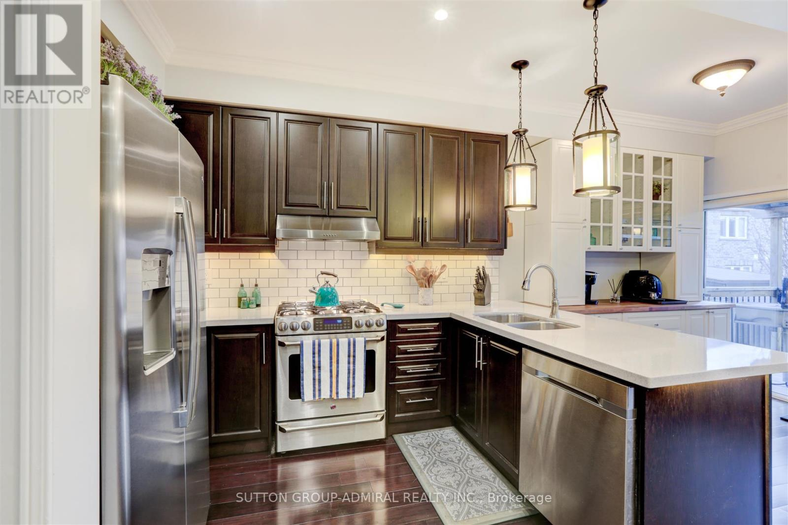

Property Listing 3 - Pictures
Price: $450,000
Address: 789 Oak St, Vaugan
Lot Size: 0.2 acres
Rooms: 2 bedrooms, 1 bathroom


Property Description:
This charming property located at 789 Oak St, Vaugan, offers cozy living with a touch of elegance. With a price tag of $450,000, this home features a serene ambiance ideal for those seeking tranquility. The property boasts a modest lot size of 0.2 acres, providing ample space for outdoor activities. Inside, you'll find two spacious bedrooms and a well-appointed bathroom, offering comfort and functionality. Whether you're looking for a starter home or a peaceful retreat, this property is sure to captivate your heart.